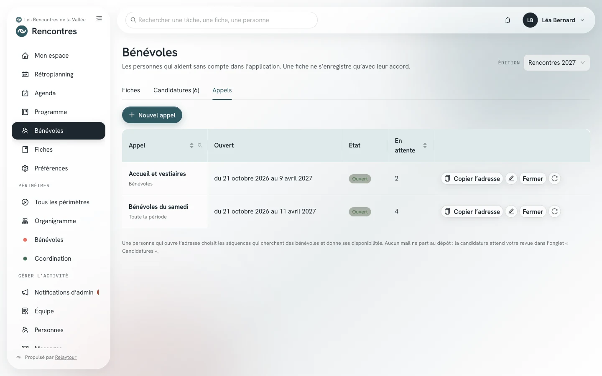
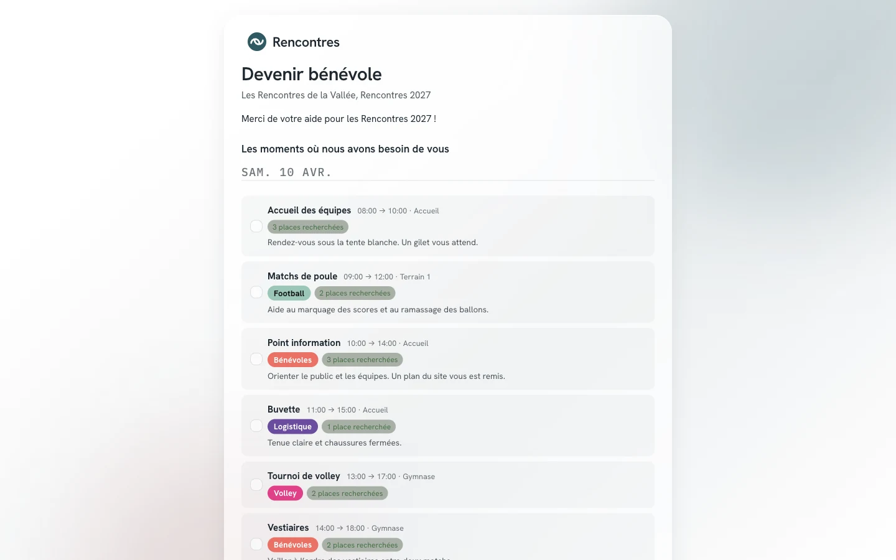
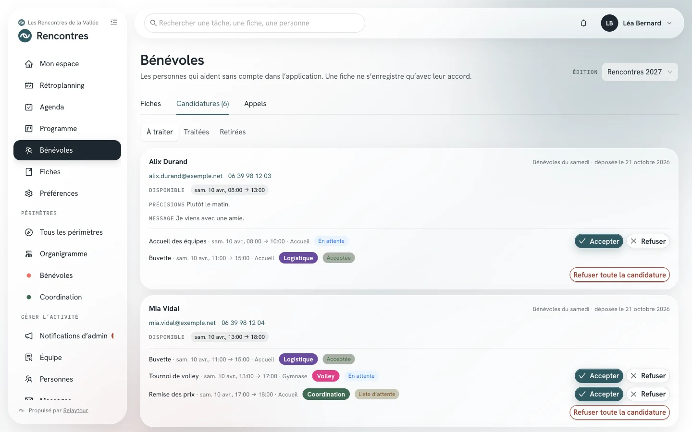
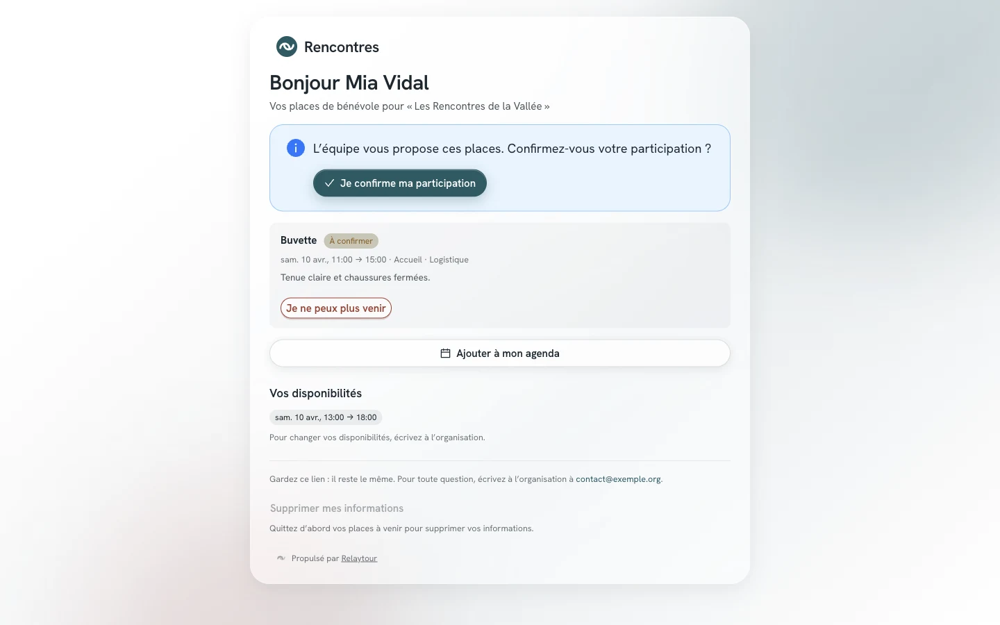
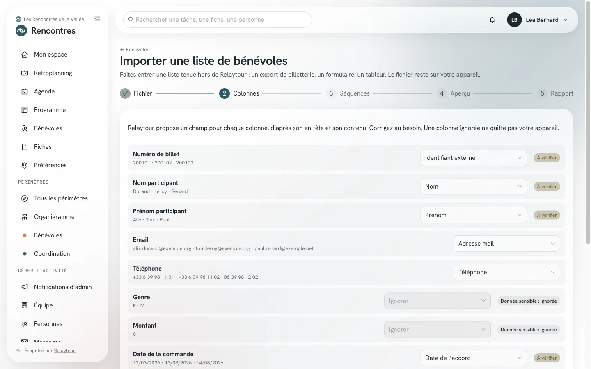
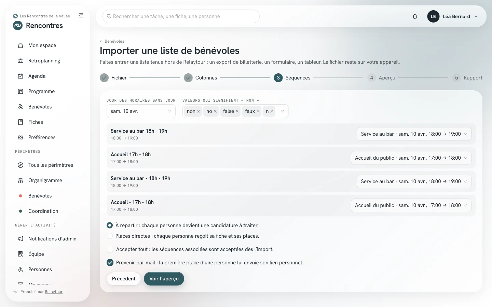
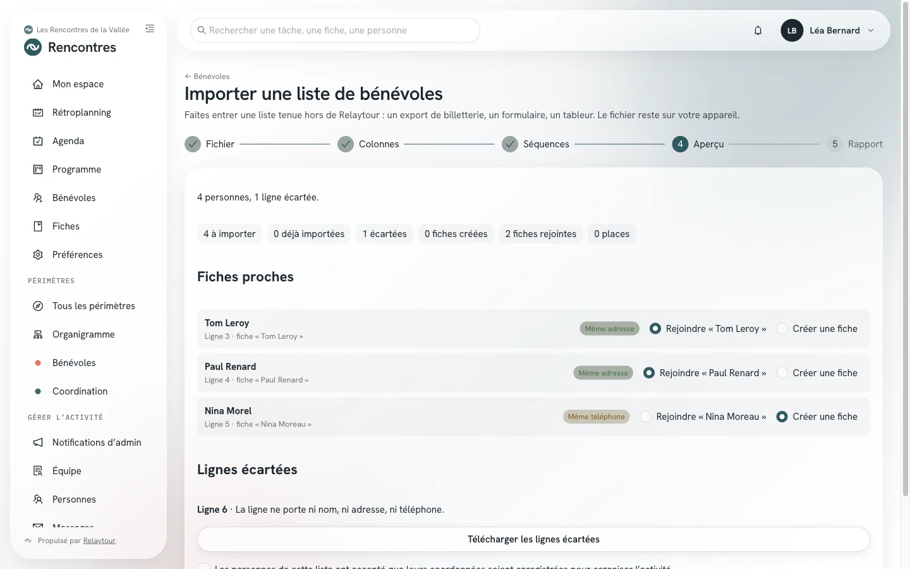
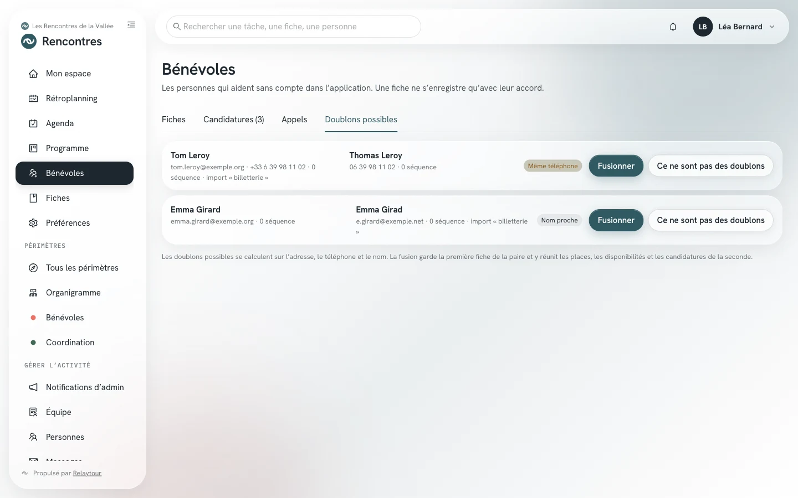

Les bénévoles se proposent par l'adresse publique d'un appel. Vous traitez leurs candidatures, puis vous les placez dans les séquences du programme qui manquent de monde.
Ce mode d'emploi complète les sections « Programme » et « Bénévoles » du mode d'emploi des référentes et référents. Il s'adresse aux personnes qui écrivent dans un périmètre et aux admins de l'activité.
Point de départ
Le parcours d'une ou d'un bénévole
Relaytour n'envoie aucun mail tant que l'équipe n'a pas décidé. Une adresse saisie sur la page publique ne reçoit rien avant l'acceptation d'une de ses séquences.
1. Vous ouvrez un appel
Vous indiquez les renforts recherchés dans vos séquences. Vous ouvrez ensuite un appel, puis vous diffusez son adresse : affiche, réseau social, lettre d'information.
2. La personne candidate
Elle choisit des séquences, donne ses disponibilités et coche son accord. Sa candidature attend votre revue. Aucun mail ne part.
3. Vous acceptez
Vous acceptez une séquence, depuis la file des candidatures ou depuis la vue « Répartition ». La personne reçoit alors un seul mail, avec son lien personnel.
4. Elle confirme
Le lien ouvre son espace bénévole. Elle y confirme sa participation par un bouton. Ouvrir le lien ne confirme rien.
5. Vous suivez la couverture
La vue « Répartition » montre les heures qui manquent de monde. Vous y placez les personnes disponibles, candidates ou déjà enregistrées.
Écran par écran
Du programme à la place confirmée
Les adresses commencent par l'identifiant de l'activité affichée, par exemple /rencontres/benevoles. Le mot « édition » devient « saison » ou « mandat » selon la nature de l'activité.
Préparer les séquences
/<activité>/programme
Une séquence n'apparaît dans un appel que si elle recherche des renforts. Vous fixez ce nombre dans la fenêtre de la séquence, rubrique « Bénévoles ». Les personnes placées en responsabilité n'y comptent pas.
Renforts recherchésLe nombre de bénévoles en renfort que la séquence recherche, 200 au plus. Une place à confirmer compte déjà.
Consignes pour les bénévolesLa mission, le point de rendez-vous, la tenue. Ce texte est public, à la différence de la description de la séquence.
La grille et la liste du programme affichent la jauge de chaque séquence : « 0/3 » indique trois renforts recherchés et aucun placé.
Le programme du jour J en grille, avec la jauge de chaque séquence.
Des consignes qui contiennent un numéro de téléphone ou une adresse personnelle ne sont pas publiées. Écrivez plutôt une adresse de rôle de l'organisation.
Ouvrir un appel
/<activité>/benevoles?onglet=appels
Un appel ouvre les candidatures sur une partie du programme, entre deux dates. L'onglet « Appels » de l'écran « Bénévoles » liste les appels de la période, leur état et le nombre de candidatures en attente.
La portée d'un appel désigne les séquences proposées :
Toute la périodeToutes les séquences qui recherchent des renforts. Seuls les admins de l'activité ouvrent cet appel. La personne peut aussi proposer son aide là où il manque du monde.
Un périmètreLes séquences d'un périmètre où vous écrivez.
Une séquenceUne seule séquence, pour un lien direct. Une séquence sans périmètre relève des admins de l'activité.

Les appels de la période, vus par une admin de l'activité.
Nouvel appelChoisir la portée, le nom de l'appel, l'ouverture, la fermeture et le texte d'introduction. L'adresse se copie à l'enregistrement.
Copier l'adresseRecopier l'adresse publique, à tout moment. Elle reste la même tant que vous n'en demandez pas une nouvelle.
FermerRouvrirFermer l'appel avant sa date de fermeture, puis le rouvrir si besoin. Les candidatures reçues restent.
Nouvelle adresseRemplacer l'adresse, par exemple après une diffusion trop large. L'ancienne adresse cesse de répondre.
La fermeture tombe au plus tard à la fin du dernier jour de la période. Une période compte vingt appels ouverts au plus. L'archivage de la période ferme ses appels.
La page de l'appel
/benevoles/<adresse secrète>
La page de l'appel se lit sans compte, sur un téléphone comme sur un ordinateur. Elle présente l'organisation, l'activité, la période et votre texte d'introduction. Elle liste ensuite les séquences proposées, par jour.
Chaque séquence indique son horaire, son lieu, son périmètre, ses consignes et l'état de ses renforts : « 3 places recherchées », ou « complète » avec une liste d'attente. La page ne montre aucun nom de personne placée.

La page d'un appel sur toute la période, ouverte par son adresse.
La personne coche une ou plusieurs séquences. La page la prévient quand deux séquences choisies se chevauchent. Elle ajoute ensuite ses disponibilités : un jour, une heure de début et une heure de fin, puis des précisions facultatives.
Elle donne son nom, son adresse mail et un téléphone facultatif, puis coche son accord. Un message à l'écran confirme la réception de la candidature.
Une adresse a une seule candidature en attente par appel : un second dépôt complète la première. La page ne dit jamais si une adresse a déjà candidaté. Les dépôts sont limités par adresse mail, par adresse IP et par appel.
Traiter les candidatures
/<activité>/benevoles?onglet=candidatures
L'onglet « Candidatures » réunit les candidatures de la période. L'onglet « À traiter » montre celles qui attendent une décision. Les onglets « Traitées » et « Retirées » gardent les autres.
Chaque candidature indique les coordonnées de la personne, ses disponibilités, ses précisions et son message. Elle liste ensuite les séquences choisies, chacune avec son état.

La file des candidatures, avec les boutons Accepter et Refuser de chaque séquence.
AccepterPlacer la personne en renfort dans la séquence. La fiche bénévole naît, ou rejoint la fiche qui porte la même adresse. La place attend la confirmation de la personne.
RefuserÉcarter une séquence choisie. Aucun mail ne part.
Refuser toute la candidatureÉcarter toutes les séquences encore en attente. La personne peut déposer une nouvelle candidature.
Une séquence choisie après que ses renforts sont atteints passe en liste d'attente. Vous pouvez l'accepter quand même : l'écran signale alors le dépassement. Une place libérée ne fait monter personne sans votre décision.
Une candidature reçue vous prévient dans l'application, une fois par jour au plus et sans nom. Les candidatures d'une période sont supprimées à son archivage.
Le lien personnel et l'espace bénévole
/benevole/<lien personnel>
La première place d'une fiche envoie un seul mail. Il nomme l'organisation, l'activité et les séquences, et porte le lien personnel de la personne. Ce lien reste le même d'un mail à l'autre.
Le lien ouvre l'espace bénévole. La personne y lit ses places, leurs horaires, leurs lieux et leurs consignes, puis ses disponibilités. Elle confirme sa participation par le bouton « Je confirme ma participation ».

L'espace d'une bénévole dont la place attend sa confirmation.
Ajouter à mon agendaTélécharger ses places au format iCalendar, pour Outlook, Google ou Apple.
Je ne peux plus venirQuitter une place à venir. Les personnes qui écrivent dans le périmètre de la séquence en sont prévenues.
Supprimer mes informationsSupprimer sa fiche, une fois ses places à venir quittées.
Une fois l'adresse confirmée, la personne reçoit un mail quand ses places changent : une place ajoutée, retirée ou déplacée. Les changements se regroupent pendant deux minutes. Une place ajoutée reste à confirmer.
Une fiche reçoit ces mails quand elle porte une adresse et l'option « Prévenir par mail », cochée par défaut. Décochez l'option pour une personne que vous joignez autrement : ses places naissent alors confirmées.
La fenêtre d'une fiche, dans l'onglet « Fiches », porte le lien personnel. Une personne qui lit les coordonnées sans pouvoir modifier la fiche l'ouvre par le bouton « Lien » de la colonne « Participation ».
Copier le lienRecopier le lien pour l'envoyer par SMS ou par message. Une fiche sans lien en reçoit un.
Renvoyer par mailRenvoyer le lien à une personne qui n'a pas confirmé. Ce renvoi ne se fait qu'une fois.
Nouveau lienRemplacer le lien. L'ancien cesse de répondre, et aucun mail ne part.
Une place encore à confirmer sept jours après l'acceptation, ou la veille de sa séquence, apparaît « non confirmée ». Vous décidez alors de la libérer ou de la garder.
Répartir dans le programme
/<activité>/programme?vue=repartition
La vue « Répartition » de l'écran « Programme » croise les renforts recherchés, les places et les disponibilités. Elle s'affiche pour les personnes qui écrivent dans au moins un périmètre.
Le bandeau Couverture découpe le jour en tranches de 30 minutes. Chaque tranche indique les renforts recherchés, les places confirmées, les places à confirmer et les bénévoles disponibles. Une tranche en manque se colore.
La frise montre les séquences sur l'axe des heures, par périmètre ou par lieu. Le panneau « Bénévoles à répartir » montre les personnes disponibles et leurs plages, sur le même axe.
La vue « Répartition » d'une référente, avec la séquence « Point information » choisie.
Choisissez une séquence : le panneau classe les personnes selon leurs plages. Des marques signalent qui a choisi cette séquence, qui est en liste d'attente, et qui est déjà placé·e à la même heure.
DisponibleEn partieHors plagesUne plage couvre toute la séquence, une partie seulement, ou aucune.
PlacerPlacer la personne dans la séquence choisie. Sur un ordinateur, vous pouvez aussi la glisser sur la séquence.
RetirerRetirer une place depuis la frise. La personne revient dans les bénévoles à répartir.
Le survol d'un nom montre les précisions de la personne, son message, ses choix et ses places. Placer une candidature accepte la séquence, comme le bouton « Accepter ».
Un placement hors des plages de la personne, en chevauchement ou au-delà des renforts recherchés demande une confirmation. Sur un téléphone, la vue liste les séquences en manque, chacune avec ses bénévoles à répartir.
Listes existantes
Importer une liste tenue ailleurs
Vos bénévoles sont parfois déjà inscrits ailleurs : une billetterie en ligne, un formulaire, un tableur. L'import les fait entrer dans Relaytour sans ressaisie.
Importer une liste
/<activité>/benevoles/import
Le bouton « Importer une liste » de l'écran « Bénévoles » ouvre un assistant en cinq étapes. Il s'affiche pour les admins de l'activité et pour les personnes qui écrivent dans un périmètre.
Votre navigateur lit le fichier : un CSV ou un classeur XLSX de 2 Mo, 5 000 lignes et 200 colonnes au plus. Seules les colonnes associées partent vers le serveur, et le fichier n'est gardé nulle part.
FichierChoisir la période, la portée et le fichier, puis nommer la source (« Billetterie du 7 août »). Un admin importe pour tout le programme ; une référente ou un référent importe pour son périmètre.
ColonnesVérifier le champ proposé pour chaque colonne : prénom, nom, adresse, téléphone, précisions, postes et créneaux, identifiant externe.
SéquencesAssocier chaque poste ou créneau du fichier à une séquence du programme, à une simple disponibilité, ou l'ignorer.
AperçuRelire le bilan, trancher pour les fiches proches et confirmer l'accord des personnes, puis importer.
RapportLire le nombre de personnes importées, de fiches créées ou rejointes et de places.

L'étape « Colonnes » d'un export de billetterie fictif.
Relaytour propose un champ d'après l'en-tête et le contenu de chaque colonne. Une marque « À vérifier » signale une proposition incertaine. Une colonne de genre, de santé ou de paiement reste toujours ignorée.
Enregistrez une correspondance d'import pour retrouver vos choix au prochain fichier de la même source. Une correspondance garde les en-têtes et les associations, jamais les données des personnes.
Le fichier peut décrire les postes de trois façons. Une colonne par poste ou par créneau, dont une cellule remplie signifie « choisi ». Une cellule qui énumère plusieurs postes et horaires. Plusieurs lignes par personne, réunies par une colonne de regroupement.

L'étape « Séquences » : chaque poste du fichier rejoint une séquence du programme.
Un horaire sans jour reçoit le jour choisi en haut de l'étape. Indiquez aussi les valeurs qui signifient « non » dans votre outil, par exemple « non » ou « false ».
À répartirChaque personne devient une candidature à traiter, dans un appel propre à la source. L'option « Accepter tout » accepte d'un geste les séquences associées.
Places directesChaque personne reçoit sa fiche et ses places dans les séquences associées. Ce mode exige au moins une séquence associée.
Prévenir par mailEnvoyer le lien personnel à la première place d'une personne. Décochez l'option si votre équipe contacte ses bénévoles elle-même.

L'aperçu annonce le bilan avant toute écriture.
L'aperçu ne modifie rien. Il compte les personnes à importer, celles déjà importées et les lignes écartées. Une ligne sans nom, sans adresse et sans téléphone est écartée, comme un lot de billets anonymes.
Une personne qui porte l'adresse d'une fiche existante la rejoint d'office. Pour un même téléphone ou un nom proche, vous choisissez « Rejoindre » ou « Créer une fiche ». Les lignes écartées se téléchargent en CSV.
Aucun mail ne part à l'import. Un identifiant externe, comme un numéro de billet, rend l'import rejouable : un fichier mis à jour n'ajoute que les nouvelles personnes. La date de l'accord vaut la date de l'import, sauf colonne associée.
Doublons possibles et fusion
/<activité>/benevoles?onglet=doublons
L'onglet « Doublons possibles » de l'écran « Bénévoles » rapproche les fiches qui semblent décrire la même personne. Il s'affiche pour les admins de l'activité seulement, car la fusion touche des fiches créées par d'autres.

Deux paires de fiches à examiner après un import.
Même adresseMême téléphoneNom procheLe motif du rapprochement, du plus sûr au moins sûr.
FusionnerChoisir le nom, l'adresse et le téléphone gardés, puis réunir les deux fiches en une seule.
Ce ne sont pas des doublonsÉcarter la paire après confirmation. Elle ne sera plus proposée.
La fusion garde la première fiche de la paire. Elle y réunit les places, les disponibilités et les candidatures de la seconde, puis supprime la seconde. Les notes se mettent bout à bout.
Le lien personnel et la confirmation suivent l'adresse gardée. Deux places dans la même séquence n'en font plus qu'une.
Droits
Qui voit quoi
Les candidatures portent des coordonnées personnelles. Elles se lisent seulement par les personnes qui peuvent les traiter.
Les admins de l'activité
Ils ouvrent des appels de toute portée et lisent toutes les candidatures, avec l'adresse et le téléphone. Ils acceptent pour les séquences sans périmètre.
Les référentes et référents
Ils ouvrent des appels pour leur périmètre. Ils lisent les candidatures qui choisissent une de leurs séquences, et seulement ces choix.
Les bénévoles à répartir
Les personnes d'un appel ou d'un import sur toute la période se voient par toute personne qui écrit dans un périmètre : nom, plages, précisions, choix et places. L'adresse et le téléphone restent réservés.
Une fiche bénévole garde les règles de lecture des coordonnées décrites dans le mode d'emploi des référentes et référents. Une place à confirmer compte comme une place pour ces règles.